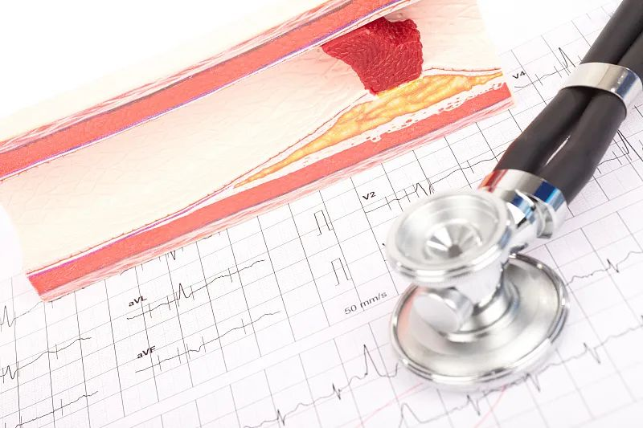

订阅
健康管家
Search
登录

随着生活节奏的加快
以及饮食习惯的变化
高血脂人数不断增加
哪些症状是高血脂的表现？
如何通过饮食控制血脂？
一起来看看
血脂的主要成分
是甘油三酯和胆固醇
它们都是维持人体机能
不可缺少的物质
胆固醇又分为
高密度脂蛋白和低密度脂蛋白
动脉硬化的形成
低密度脂蛋白增高是“主犯”
甘油三酯偏高是“从犯”
想要控制血脂
主要应控制胆固醇的摄入
我的健康
中医问诊
健康检测
医疗档案
健康小游戏
我的建议
饮食管理
运动管理
保险推荐
我的福利
积分兑换